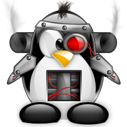

ROS Biz

Who Am I?
Daniel Stonier
Yujin Robot Innovation Team Leader.
Embedded/Control Engineer
Algorithms Monkey
Software Architect
B Science., B Electrical Engineering, Phd. Mathematics.
Who Am I?
Robotics background...
- University
- More Robotics/AI in math than in my engineering degree
- Postdoc at KAIST in a robotics lab
- Yujin Developer
- Control Engineer
- Vision system in Yujin cleaning robots
- Had to accelerate development from one robot to the next
- Found ROS 0.4 (2008)
- Had to implement processes for teams @ Yujin
- Moved the company across to ROS after a trial period
- ROS Expert
- Contributed many patches for early ROS (0.x.y)
- Participated in design sessions for core ROS components
- ROS software package maintainer
- Turtlebot 2 Project Lead - the ROS reference robot
- Collaborated with international ROS teams
- Annual speaker at ROSCon conferences
- Regular contact with the ROS directors
Who Am I?


Who Am I?

Robot Glue

- Stick stuff together to quickly assemble assorted things.
- Stick stuff together to make something big.
- Stick somebody else's stuff together to leave everyone else for dead.
IBM Compatible PC
The glue for computer hardware...

Windows OS
The glue for software application development...
The Web & HTML
The glue for connecting and businesses to the world ...
Others
- Web 2.0 & Cloud - software independant of platform.
- iOS/Android - pc explosion in the hand
- IOT - still trying to find the glue....
What is the effect of the Glue?
From everyone trying to play on their own playing field...

What is the effect of the Glue?
To just one playing field....
GAME ON!
Robots and Glue?
- Until now, only industrial and cleaning robots
- pretty simple (no glue needed).
- Finally, a convergence of great technologies!
- Sensing : cheap lasers, 3d sensors (thanks gaming industry)
- CPU : embedded power (thanks smart phones)
- Software : a growing ecosystem of freely available software
- Batteries : huge investments going on here
Just missing the glue...
The Robotics Problem
The Robotics Problem
It'd be like today's world trying to talk and work with each other....
without english.
Thats why we need the glue...
What is ROS?
- One of many robot glues that emerged in the 2000's
- ROS, MS Robotics Studio, OROCOS, MOOS, OPROS...
- 2007 - emerged from Stanford.
- 2008 - migrated to Willow Garage.
- 2012 - migrated to the Open Source Robotics Foundation.
- Not owned by a company.
- Not dependent on a university and it's funding imperatives.
It is a glue for robotics software and hardware
What is ROS Technically?
- Software Ecosystem
- Alot of tools for packaging
- 4000 publicly hosted software packages
- 4 million package downloads a year
- Extensive community support for users
- 40+% growth every year for five years
- Plumbing
- Distributed Development Middleware
- Internal and External Communication SW
- Development Tools
- Capabilities
- Navigation Framework
- Drivers...
How Does it Stack Up? - ROS is ì •!
Compared to others (e.g. OPROS, MSRDS...)
- Crazy growth rate 40+%, must be doing something right
- Not perfect software, but does all the other things right
- Fantastic developer tools
- Huge and easy access to research software.
- Backed it up with the world's most sophisticated robot.
- Doesn't force big changes to your existing development patterns
- Doesn't try to be the tool for every job
No insidious marketing or soft support from government
Entrepenaurial - best by virtue of being the best
Where has ROS Been?
- ROS 1.0 (2010)
- Targeted Universities
- Primarily for single robots
- Validated by the PR2
Where is ROS Going?
- ROS 2.0 (2016-)
- Targeting companies
- Other platform connectivity
- Web, embedded, multi-robot
- Shifting to DDS middleware
- Communicate with the big boys - NASA, Military, Auto
ROS & Yujin
We use ROS for:
- Rapid prototyping and development
- A build environment to manage complexity
- even if the project is not using ROS.
- As a desired criteria for new recruits
- shorter learning curves.
- A way to collaborate with other companies
- on tools & frameworks
- and build our differentiators inside these
- Packaging software
- Visualisation and debugging tools
- Access to the Ros community
- priveleged priority on fixes & features we need.
- a network of people to lean on for expertise.
It accelerates what we do.
But its not our only accelerator.
Important Messages - I
Is ROS a differentiator?
No, look elsewhere for differentiators.
It does infer that time is not wasted on non-differentiators.
Doing it all yourself is too slow.
Important Messages - II
The future of OSRF is not yet certain...
Stable funding for the next few years (DARPA)
Incredible growth rate
Should give it a chance for long term strategy to emerge.
Important Messages - III
Watch out for fanboys preaching about ROS, OPROS...
People who preach should be thinking more about about their product/differentiators.